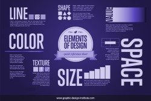
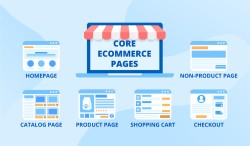

Structure
Elements of design such as Color, Texture, Size, Space and Shape are great for engagement and make the site look nice , some businesses go overboard with the color. Their sites are crowded with a lot of color and Some people may think that it’s great but it can become overwhelming if there are too many so it's important to choose the right colors. Different colors produce different emotions in people,
Interaction
Websites must engage with the audience, hold their attention, direct them through the stages of your website and finally encourage them to contact companies.Also website isn’t just there for show, it is there to help you generate leads, increase sales and grow business so ensure website is engages with visitors in the correct way